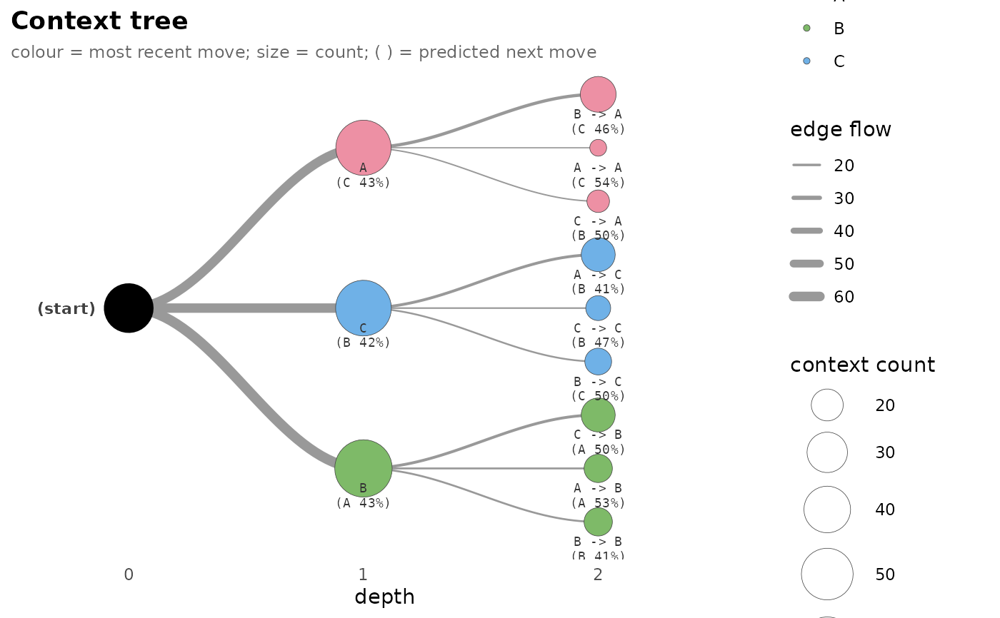
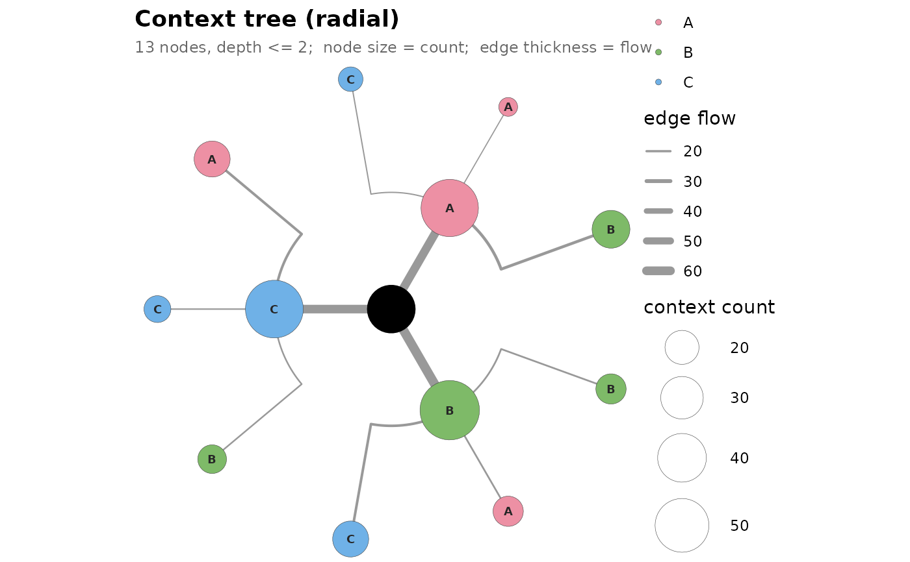
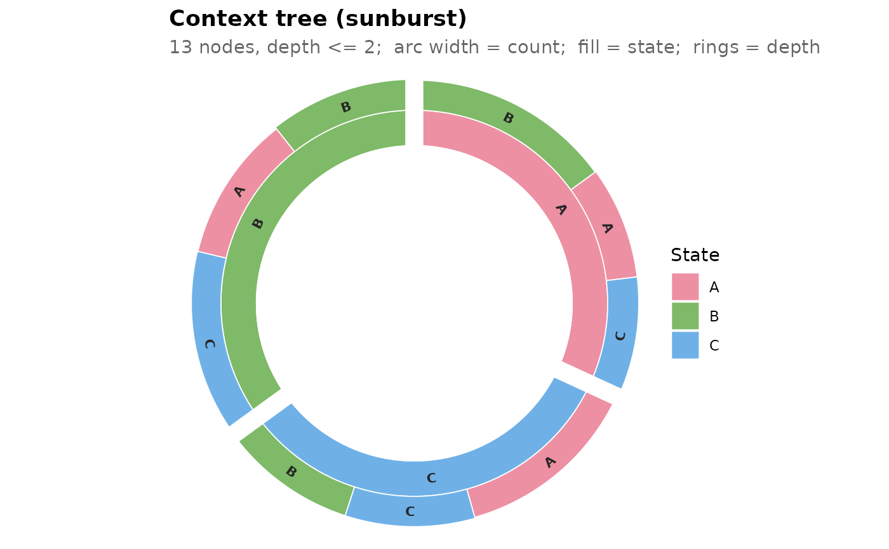

Renders a fitted transitiontrees in one of four styles:
"horizontal"(default) — pure-ggplot2 left-to-right phylogram: root on the left, contexts fanned out vertically to the right, each labelled beneath with its full arrow-notation context and (by default) its modal prediction"(state pct%)"on a second line. Node fill is the most recent move (rightmost token), so each branch off a depth-1 hub shares a colour. Setshow_prediction = FALSEfor context-only labels."dendrogram"— pure-ggplot2 radial tree: root at the centre, leaves on the outer ring."icicle"— circular partition / sunburst viaggraph(Suggests); inner ring carries full state names, outer rings carry 3-letter abbreviations."interactive"—visNetworkhtmlwidget (Suggests). A draggable, zoomable hierarchical tree; node size = context count and edge width = child's count (“flow”), the same encoding as the static styles. Hover for a tooltip with the full pathway, count, modal next state, and the complete next-state distribution.
Common encoding: node size = context count, edge thickness = child's
count (“flow”). Node fill is the most recent move (rightmost
token of the context) in the "horizontal" style; the
"dendrogram", "icicle", and "interactive" styles
colour by the branching (oldest) token.
Arguments
- x
A
transitiontrees.- style
One of
"horizontal"(default),"dendrogram","icicle", or"interactive".- point_size_range
Numeric length-2 vector controlling the minimum and maximum node-point size. Default
c(5, 16)for"dendrogram",c(4, 14)for"horizontal",c(10, 45)(pixels) for"interactive". Ignored by"icicle".- edge_size_range
Numeric length-2 vector for edge width. Default
c(0.3, 2.5)for the static styles,c(1, 10)(pixels) for"interactive". Ignored by"icicle".- ...
Passed to the chosen backend. For
style = "horizontal",show_prediction(logical, defaultTRUE) toggles each node's modal prediction"(state pct%)"on a second label line; setFALSEfor context-only labels. Forstyle = "interactive",width/heightsize the htmlwidget.
Details
"icicle" requires ggraph + tidygraph;
"interactive" requires visNetwork. The dispatcher
errors informatively if a needed Suggests dependency is missing.
Examples
# \donttest{
set.seed(1)
m <- matrix(sample(c("A","B","C"), 200, TRUE), 20)
tr <- context_tree(m, max_depth = 2L, min_count = 3L)
plot(tr) # left-to-right phylogram (default)

plot(tr, style = "dendrogram") # radial dendrogram

if (requireNamespace("ggraph", quietly = TRUE) &&
requireNamespace("tidygraph", quietly = TRUE))
plot(tr, style = "icicle") # sunburst (needs ggraph + tidygraph)

if (requireNamespace("visNetwork", quietly = TRUE))
plot(tr, style = "interactive") # visNetwork htmlwidget (Suggests)
# }